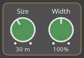
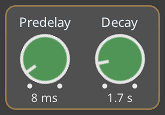
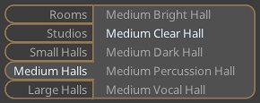
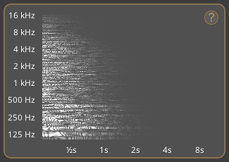
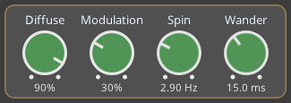
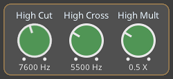
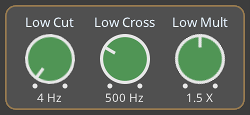

Introduction
Dragonfly Hall Reverb is a stereo-to-stereo concert hall style
reverb effect. It is based on Hibiki Reverb from Freeverb3VST,
consisting of Moorer's early reflection model and a modified
FDN allpass Zita reverb. Dragonfly Reverb is available as a
64-bit plug-in for Windows, OS X and Linux. It is distributed
under the GPL 3.0 License.
Dragonfly Reverb is primarily intended for use as a concert hall
reverb. It also has numerous smaller presets like rooms,
studios, and chambers, as well as several larger (and even
enormous) presets. The presets have been adapted almost directly
from Hibiki Reverb. The presets are divided into five
categories: Rooms, Studios, Small Halls, Medium Halls and Large
Halls. These represent “real spaces” ranging in size from small
to large.
While Dragonfly Hall Reverb is built on the same algorithms as
Hibiki reverb, it has a very different user interface. To make
the interface more simple, some parameters have been
consolidated into single dials, and some parameters have been
set to fixed values and are not exposed at all.
User Interface
Sliders

- Dry Level
- Level of the input signal sent directly to the reverb’s output
- Early Level
- Level of the early reflection signal in the reverb’s output
- Early Send
- Level of the early reflection signal mixed into the input to the late reverberation algorithm
- Late Level
- Level of the late reverberation signal in the reverb’s output
The output of the Dry, Early, and Late controls are combined to
form the reverb’s output signal. Note that sliders are not
controlled by the presets. This allows you to set the levels in
a way that works for you projects, and then explore different
presets without the sliders changing.
Basic Dials
Note that holding the Shift key and clicking a dial will reset
the dial to the default for the current preset.

- Size
-
Length of the reverb’s internal delay lines. Increasing the
Size parameter generally leads to a smoother, less resonant
output however it can also increase the reverb’s attack time
and make individual early reflections more audible. Decreasing
the Size parameter generally has the opposite effect,
decreasing the reverb’s attack time and making individual
early reflections less audible although it can increase the
presence of metallic resonances.
-
In physical terms, Dragonfly Reverb’s Size control corresponds
to the largest dimension of an imaginary space. When the size
is small, the “walls” of this space are closer together and
the resultant reflection density increases. When the size is
large, that reflection density decreases. It is recommended
that for natural sounding reverbs the Size range be limited to
around 24 meters to 45 meters. However, there are many useful
reverbs that are outside this range.
- Width
-
The Width control sets the stereo width of Dragonfly Reverb’s
output. Note that the Width parameter applies to both the
early reflections and the late reverberation. This is
different to the Hibiki reverb which allows the user to
control the early reflection width and late reverberation
width independently.

- Predelay
-
Delay before the onset of the late reverberation. Note that
only the late reverberation is delayed. Early reflections are
always output immediately. You can see this by doing the
following. After setting the reverb to 100% Early, and 0%
Late, it can be seen that changing the Predelay doesn't move
the early reflections shown on the spectrogram. However, with
0% Dry and 100% Late, the late reverberation shown on the
spectrogram is moved according to the setting of the Predelay.
- Decay
-
Length of time for the late reverberation to decrease by 60dB.
Preset Browser

The Preset Browser section presents the user with a range of
room, studio, and hall presets.
Spectrogram

The spectrogram has been included so that the user can get a
better idea of how the various reverb paramters affect the
plug-in’s output. The spectrogram is rendered by simulating a
burst of white noise through the reverb algorithm with the
current settings, and then processing the output with a fast
fourier transform algorithm.
Clicking on the “?” displays the plugin name, version, license,
and credits.
Advanced Dials

- Diffuse
-
Adjusts the coefficients of the allpass filters in the late
reverberation algorithm. It enables the user to balance echo
density against unpleasant colouration so that the result
enhances rather than detracts from the audio input signal.
-
A challenge that the designers of early digital reverbs faced
was generating a realistic number of early reflections or echo
density. One solution to this problem was to use allpass
filter networks. Although successful in increasing echo
density, the downside of allpass filter networks is that they
have a tendency to resonate, particularly when the input
signal is impulsive. This means that there is a tradeoff
between echo density and colouration.
-
In general, low echo density or diffusion settings increase
the perception of discrete echoes. In the case of
transient-rich sounds this can lead to “machine-gun-like”
effects in which individual echoes are heard. For sustained
sounds, this is less of an issue. Increasing the Diffusion
setting makes individual echoes less perceptible and generally
leads to a smoother, more lush reverb sound however it also
can introduce metallic resonances which can be noticeable but
depend to a large extent on the nature of the input signal.
-
To better understand the effects of Dragonfly Reverb’s Diffuse
control, open a track with clear percussive sounds. Decreasing
the Diffuse value will result in fewer, more discrete
reflections in the late reverberation. When set at very low
values the late reverberation has an almost "shattering" sound
to it. A higher Diffuse setting results in the late
reverberation having a smoother and richer sound.
- Modulation
-
Level of modulation on the late reverberation signal. If this
is set to 0%, the following Spin and Wander dials will have no
effect.
- Spin
-
Rate of modulated chorus effect on the late reverberation. In
most cases, values from 1–2 Hz are appropriate. Typically,
these values should be smaller for small rooms and chambers,
however it’s always best to set the parameters according to
the musical context. Higher Spin values can lead to an audible
“wobble” particularly in real instruments such as acoustic
guitar or piano and can also cause noise on pure tones. This
effect tends to be less noticeable on speech.
- Wander
-
Length of modulated chorus effect on the late reverberation,
measured in milliseconds.
-
To better understand the effects of Spin and Wander, set a
large room size, a long delay, Modulation to 100%, and Wander
to 0 ms. Then play an abrupt sound such as a percussion hit or
a chord on piano or guitar. You'll notice the reverb tail
panning alternately left and right in the stereo field at the
rate set by Spin control. There are multiple late
reverberation layers, but they are all synchronised when
Wander is set to 0 ms. Next, slightly increase the Wander
setting. As you do this, you will find that the Spin
"movement" of the layered late reverberation spreads out. The
layers all still “spin” at the same rate, but at any given
time each one has its own location in the stereo field.

- High Cut
-
Cutoff frequency of the reverb’s low pass filter, applied to
both the early reflections and late reverberation.
- High Cross
-
Short for High Crossover, the threshold in Hz above which the
High Multiplier parameter affects the high frequency component
of the late reverberation.
- High Mult
-
Short for High Multiplier. Multiplies the decay time of
frequencies above the High Crossover frequency. Applies only
to the late reverberation signal.

- Low Cut
-
Cutoff frequency of the reverb’s high pass filter, is applied
to both the early reflectinos and late reverberation.
- Low Cross
-
Short for Low Crossover, the threshold below which the Low
Multiplier parameter affects the low frequency component of
the late reverberation.
- Low Mult
-
Short for Low Multiplier. Multiplies the decay time below the
Low Crossover frequency. Applies only to the late
reverberation signal.
The Crossover and Multiplier parameters work together to
determine the characteristics of the late reverberation. For
example, with Decay is set to 2.0s, High Crossover set to 5
kHz, and High Multiplier set to 0.8 X, frequencies above 5kHz
will generally have a decay time of 2.0s x 0.8 = 1.6s. Note
that the crossover frequency isn't a hard boundary, so the
decay time will be ramped near the threshold. The same applies
to the Low Crossover and Low Multiplier parameters. For
example, with Decay set to 2.0s, Low Crossover set to 1 kHz
and Low Multiplier set to 1.5, frequencies under 1 kHz will
have a decay time of 2.0s x 1.5 = 3.0s.